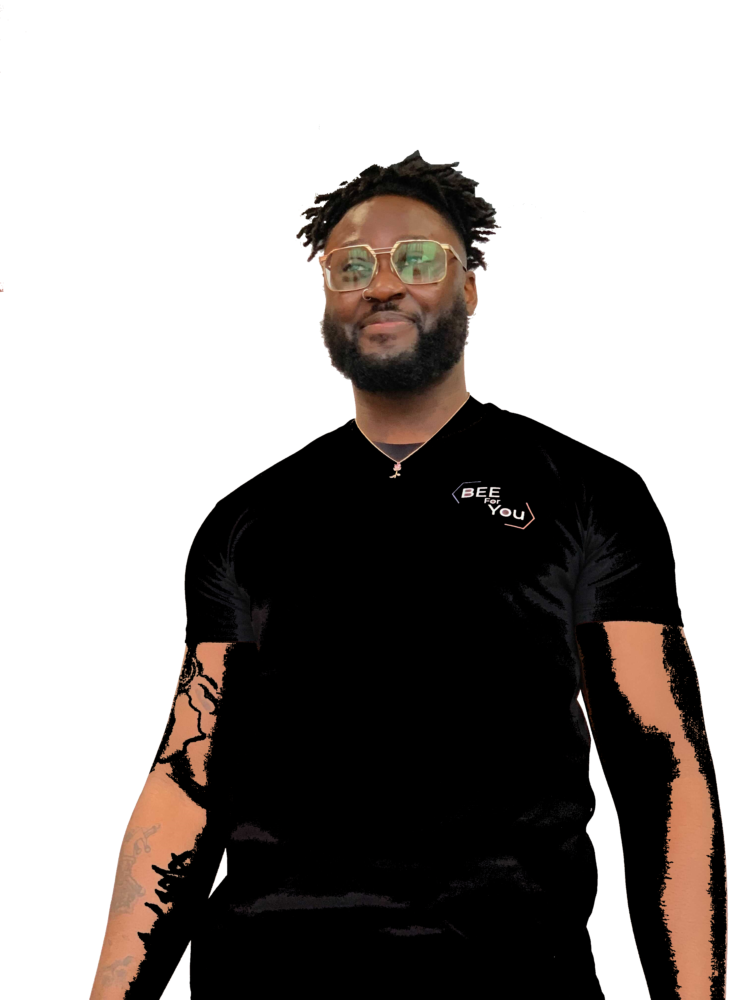

Christy BIKOYI
Développeur Junior
"Je passe mon temps à faire ce que je ne sais pas faire, pour apprendre à le faire."
Pablo Picasso
"Je passe mon temps à faire ce que je ne sais pas faire, pour apprendre à le faire."
Pablo Picasso
Mon parcours scolaire reprend en 2016 en BAC PRO MELEC, (métier de l'électricité et des environnement connectés), en alternance au CFAI de Dammarie Les Lys, l'obtention de ce diplôme m'a permis de m'ouvrir les portes pour débuter une formation en Informatique en BTS SIO ( Service informatique aux organisations option slam Developpement ) également en alternance, à l'UTEC de Fontainebleau Avon. A la suite de cette formation je souhaiterai poursuivre mes études en Ecole d'ingénieur ou en école d'informatique toujours en alternance.
CV disponible ici
Integration Front
Test d'application Web
Gestion Contentful
Typeform
Wordpress